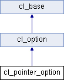

Main Page
Classes
Files
Class List
Class Index
Class Hierarchy
Class Members
Public Member Functions
cl_pointer_option Class Reference
Inheritance diagram for cl_pointer_option:

List of all members.
Public Member Functions
cl_pointer_option
(class
cl_base
*the_creator, char *aname, char *Ihelp)
virtual class
cl_option
&
operator=
(class
cl_option
&o)
virtual void
print
(class cl_console *con)
virtual char *
get_type_name
(void)
The documentation for this class was generated from the following files:
optioncl.h
option.cc
All
Classes
Functions
Generated on Tue Apr 30 2013 15:00:14 by
1.7.3
 1.7.3
1.7.3